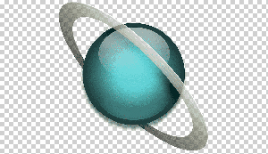

Las imágenes es bastante común encontrarlas relacionadas con la etiqueta de los enlaces para provocar dos comportamientos muy extendidos. Estos son dos fundamentalmente:
<a href="https://www.google.es/">"img src="img/google.jpg" width="300px" target="_blank/><a>
<a href="imagen_gran.jpg" target="_blank>"img src="imagen_pq.jpg"/><a>
También es bastante común la necesidad de dejar transparentes algunas partes de la imagen con el objetivo de respetar las imágenes o colores de fondo que hallammos puesto para toda la página web. Las imagenes con zonas transparentes estan en formato *.gif o *.png que son los que conservaran dicha particularidad si creas zonas transparentes en las imágenes y las guardas en formato *.jpg te seguiran apareciendo con fondo blanco.
Imagen sin transparencia
Imagen con transparencia
Para crear zonas transparentes en una imagen necesitas alguna aplicación que permita seleccionar sobre la imagen el color "transparentar" y una vez realizada la operación guardarla en el formato adecuado. Evidentemente para apreciar el efecto es necesario disponer de al menos algun color de fondo para la página, y que en esta ocasion y dado que no hemos visto CSS, lo haremos directamente agregando el atributo bgcolor="#RRGGBB" en la etiqueta "body"